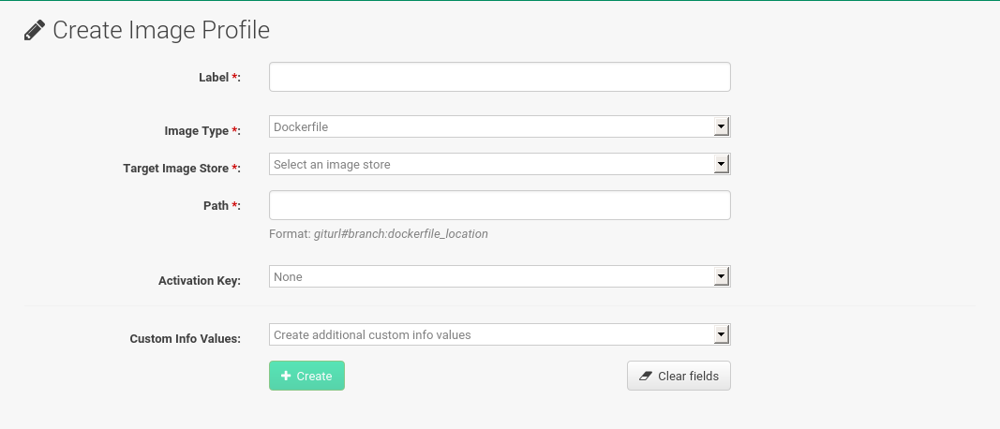
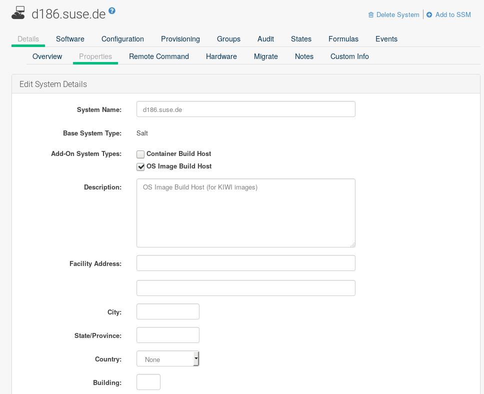

Image Building and Management
1. Image Building Overview
SUSE Manager enables system administrators to build containers and OS Images and push the result in image stores. The workflow looks like this:
-
Define an image store
-
Define an image profile and associate it with a source (either a git repository or a directory)
-
Build the image
-
Push the image to the image store
SUSE Manager supports two distinct build types: dockerfile, and the Kiwi image system.
The Kiwi build type is used to build system, virtual, and other images.
The image store for the Kiwi build type is pre-defined as a file system directory at /srv/www/os-images on the server.
SUSE Manager serves the image store over HTTPS from //<SERVER-FQDN>/os-images/.
The image store location is unique and is not customizable.
Images are always stored in /srv/www/os-image/<organization id>.
2. Container Images

2.1. Requirements
The containers feature is available for Salt clients running SUSE Linux Enterprise Server 12 or later. Before you begin, ensure your environment meets these requirements:
-
A published git repository containing a dockerfile and configuration scripts. The repository can be public or private, and should be hosted on GitHub, GitLab, or BitBucket.
-
A properly configured image store, such as a Docker registry.
For more information on Containers, see:
-
https://documentation.suse.com/sles/15-SP3/html/SLES-all/book-container.html
2.2. Create a Build Host
To build images with SUSE Manager, you need to create and configure a build host. Container build hosts are Salt clients running SUSE Linux Enterprise 12 or later. This section guides you through the initial configuration for a build host.
|
The operating system on the build host must match the operating system on the targeted image. For example, build SUSE Linux Enterprise Server 15 based images on a build host running SUSE Linux Enterprise Server 15 (SP2 or later) OS version. Build SUSE Linux Enterprise Server 12 based images on a build host running SUSE Linux Enterprise Server 12 SP4 or SUSE Linux Enterprise Server 12 SP3 OS version. Cross-architecture builds are not supported. |
From the SUSE Manager Web UI, perform these steps to configure a build host:
-
Select a Salt client to be designated as a build host from the page.
-
From the
System Detailspage of the selected client assign the containers modules. Go to and enable the containers module (for example,SLE-Module-Containers15-PoolandSLE-Module-Containers15-Updates). Confirm by clicking Change Subscriptions. -
From the page, enable
Container Build Hostfrom theAdd-on System Typeslist and confirm by clicking Update Properties. -
Install all required packages by applying
Highstate. From the system details page select and clickApply Highstate. Alternatively, apply Highstate from the SUSE Manager Server command line:salt '$your_client' state.highstate
2.3. Create an Activation Key for Containers
The containers built using SUSE Manager use channels associated to the activation key as repositories when building the image. This section guides you through creating an ad-hoc activation key for this purpose.
|
To build a container, you need an activation key that is associated with a channel other than |

-
Select .
-
Click Create Key.
-
Enter a
Descriptionand aKeyname. Use the drop-down menu to select theBase Channelto associate with this key. -
Confirm with Create Activation Key.
For more information, see [bp.key.managment].
2.4. Create an Image Store
All built images are pushed to an image store. This section contains information about creating an image store.

-
Select .
-
Click
Createto create a new store.
-
Define a name for the image store in the
Labelfield. -
Provide the path to your image registry by filling in the
URIfield, as a fully qualified domain name (FQDN) for the container registry host (whether internal or external).
registry.example.com
The Registry URI can also be used to specify an image store on a registry that is already in use.
registry.example.com:5000/myregistry/myproject
-
Click Create to add the new image store.
2.5. Create an Image Profile
All container images are built using an image profile, which contains the building instructions. This section contains information about creating an image profile with the SUSE Manager Web UI.
-
To create an image profile select and click Create.
 -
Provide a name for the image profile by filling in the
Labelfield.If your container image tag is in a format such as
myproject/myimage, make sure your image store registry URI contains the/myprojectsuffix. -
Use a dockerfile as the
Image Type. -
Use the drop-down menu to select your registry from the
Target Image Storefield. -
In the
Pathfield, type a GitHub, GitLab or BitBucket repository URL. The URL should be be http, https, or a token authentication URL. Use one of these formats:
-
GitHub single user project repository
https://github.com/USER/project.git#branchname:folder
-
GitHub organization project repository
https://github.com/ORG/project.git#branchname:folder
-
GitHub token authentication
If your git repository is private, modify the profile’s URL to include authentication. Use this URL format to authenticate with a GitHub token:
https://USER:<AUTHENTICATION_TOKEN>@github.com/USER/project.git#master:/container/
-
GitLab single user project repository
https://gitlab.example.com/USER/project.git#master:/container/
-
GitLab groups project repository
https://gitlab.example.com/GROUP/project.git#master:/container/
-
GitLab token authentication
If your git repository is private and not publicly accessible, you need to modify the profile’s git URL to include authentication. Use this URL format to authenticate with a GitLab token:
https://gitlab-ci-token:<AUTHENTICATION_TOKEN>@gitlab.example.com/USER/project.git#master:/container/
If you do not specify a git branch, the
masterbranch is used by default. If afolderis not specified, the image sources (dockerfile sources) are expected to be in the root directory of the GitHub or GitLab checkout.-
Select an
Activation Key. Activation keys ensure that images using a profile are assigned to the correct channel and packages.When you associate an activation key with an image profile you are ensuring any image using the profile uses the correct software channel and any packages in the channel.
-
Click the Create button.
-
An Image Profile that can be reused is published at https://github.com/SUSE/manager-build-profiles
|
The For example: The The repository is determined by the activation key that you assigned to your image profile. |
FROM registry.example.com/sles12sp2
MAINTAINER Tux Administrator "tux@example.com"
### Begin: These lines Required for use with {productname}
ARG repo
ARG cert
# Add the correct certificate
RUN echo "$cert" > /etc/pki/trust/anchors/RHN-ORG-TRUSTED-SSL-CERT.pem
# Update certificate trust store
RUN update-ca-certificates
# Add the repository path to the image
RUN echo "$repo" > /etc/zypp/repos.d/susemanager:dockerbuild.repo
### End: These lines required for use with {productname}
# Add the package script
ADD add_packages.sh /root/add_packages.sh
# Run the package script
RUN /root/add_packages.sh
# After building remove the repository path from image
RUN rm -f /etc/zypp/repos.d/susemanager:dockerbuild.repo
You can assign custom info key-value pairs to attach information to the image profiles.
Additionally, these key-value pairs are passed to the Docker build command as buildargs.
For more information about the available custom info keys and creating additional ones, see Custom System Information.
2.6. Build an Image
There are two ways to build an image. You can select from the left navigation bar, or click the build icon in the list.

-
Select .
-
Add a different tag name if you want a version other than the default
latest(only relevant to containers). -
Select
Build ProfileandBuild Host.Notice the
Profile Summaryto the right of the build fields. When you have selected a build profile, detailed information about the selected profile is displayed in this area. -
To schedule a build click the Build button.
2.7. Import an Image
You can import and inspect arbitrary images.
Select from the left navigation bar.
Complete the text boxes of the Import dialog.
When it has processed, the imported image is listed on the Image List page.
-
From click Import to open the
Import Imagedialog. -
In the
Import Imagedialog complete these fields:- Image store
-
The registry from where the image is pulled for inspection.
- Image name
-
The name of the image in the registry.
- Image version
-
The version of the image in the registry.
- Build host
-
The build host that pulls and inspects the image.
- Activation key
-
The activation key that provides the path to the software channel that the image is inspected with.
-
For confirmation, click Import.
The entry for the image is created in the database, and an Inspect Image action on SUSE Manager is scheduled.
When it has been processed, you can find the imported image in the Image List.
It has a different icon in the Build column, to indicate that the image is imported.
The status icon for the imported image can also be seen on the Overview tab for the image.
2.8. Troubleshooting
These are some known problems when working with images:
-
HTTPS certificates to access the registry or the git repositories should be deployed to the client by a custom state file.
-
SSH git access using Docker is currently unsupported.
3. OS Images
OS Images are built by the Kiwi image system. The output image is customizable and can be PXE, QCOW2, LiveCD, or other types of images.
For more information about the Kiwi build system, see the Kiwi documentation.
3.1. Requirements
The Kiwi image building feature is available for Salt clients running SUSE Linux Enterprise Server 12 and SUSE Linux Enterprise Server 11.
Kiwi image configuration files and configuration scripts must be accessible in one of these locations:
-
Git repository
-
HTTP hosted tarball
-
Local build host directory
For an example of a complete Kiwi repository served by git, see https://github.com/SUSE/manager-build-profiles/tree/master/OSImage
|
You need at least 1 GB of RAM available for hosts running OS Images built with Kiwi. Disk space depends on the actual size of the image. For more information, see the documentation of the underlying system. |
|
The build host must be a Salt client. Do not install the build host as a traditional client. |
3.2. Create a Build Host
To build all kinds of images with SUSE Manager, create and configure a build host. OS Image build hosts are Salt clients running on SUSE Linux Enterprise Server 15 (SP2 or later), SUSE Linux Enterprise Server 12 (SP3 or later) or SUSE Linux Enterprise Server 11 SP4.
This procedure guides you through the initial configuration for a build host.
|
The operating system on the build host must match the operating system on the targeted image. For example, build SUSE Linux Enterprise Server 15 based images on a build host running SUSE Linux Enterprise Server 15 (SP2 or later) OS version. Build SUSE Linux Enterprise Server 12 based images on a build host running SUSE Linux Enterprise Server 12 SP4 or SUSE Linux Enterprise Server 12 SP3 OS version. Build SUSE Linux Enterprise Server 11 based images on a build host running SUSE Linux Enterprise Server 11 SP4 OS version. Cross-architecture builds are not possible. For example, you must build Raspberry PI SUSE Linux Enterprise Server 15 SP3 image on a Raspberry PI (aarch64 architecture) build host running SUSE Linux Enterprise Server 15 SP3. |
Configure the build host in the SUSE Manager Web UI:
-
Select a client to be designated as a build host from the page.
-
Navigate to the tab, enable the
Add-on System TypeOS Image Build Host. Confirm with Update Properties. -
Navigate to , and enable the required software channels depending on the build host version.
-
SUSE Linux Enterprise Server 11 build hosts require SUSE Manager Client tools (
SLE-Manager-Tools11-PoolandSLE-Manager-Tools11-Updates). -
SUSE Linux Enterprise Server 12 build hosts require SUSE Manager Client tools (
SLE-Manager-Tools12-PoolandSLE-Manager-Tools12-Updates). -
SUSE Linux Enterprise Server 15 build hosts require SUSE Linux Enterprise Server modules
SLE-Module-DevTools15-SP2-PoolandSLE-Module-DevTools15-SP2-Updates. Schedule and click Confirm.
-
-
Install Kiwi and all required packages by applying
Highstate. From the system details page select and click Apply Highstate. Alternatively, apply Highstate from the SUSE Manager Server command line:salt '$your_client' state.highstate
Build host provisioning copies the SUSE Manager certificate RPM to the build host. This certificate is used for accessing repositories provided by SUSE Manager.
The certificate is packaged in RPM by the mgr-package-rpm-certificate-osimage package script.
The package script is called automatically during a new SUSE Manager installation.
When you upgrade the spacewalk-certs-tools package, the upgrade scenario calls the package script using the default values.
However if the certificate path was changed or unavailable, call the package script manually using --ca-cert-full-path <path_to_certificate> after the upgrade procedure has finished.
/usr/sbin/mgr-package-rpm-certificate-osimage --ca-cert-full-path /root/ssl-build/RHN-ORG-TRUSTED-SSL-CERTThe RPM package with the certificate is stored in a salt-accessible directory such as:
/usr/share/susemanager/salt/images/rhn-org-trusted-ssl-cert-osimage-1.0-1.noarch.rpm
The RPM package with the certificate is provided in the local build host repository:
/var/lib/Kiwi/repo
|
Specify the RPM package with the SUSE Manager SSL certificate in the build source, and make sure your Kiwi configuration contains Listing 2. config.xml
|
3.3. Create an Activation Key for OS Images
Create an activation key associated with the channel that your OS Images can use as repositories when building the image.
Activation keys are mandatory for OS Image building.
|
To build OS Images, you need an activation key that is associated with a channel other than |
-
In the Web UI, select .
-
Click
Create Key. -
Enter a
Description, aKeyname, and use the drop-down box to select aBase Channelto associate with the key. -
Confirm with Create Activation Key.
For more information, see [bp.key.managment].
3.4. Create an Image Store
OS Images can require a significant amount of storage space.
Therefore, we recommended that the OS Image store is located on a partition of its own or on a Btrfs subvolume, separate from the root partition.
By default, the image store is located at /srv/www/os-images.
|
Image stores for Kiwi build type, used to build system, virtual, and other images, are not supported yet. Images are always stored in |
3.5. Create an Image Profile
Manage image profiles using the Web UI.
-
To create an image profile select from and click Create.

-
In the
Labelfield, provide a name for theImage Profile. -
Use
Kiwias theImage Type. -
Image store is automatically selected.
-
Enter a
Config URLto the directory containing the Kiwi configuration files:-
git URI
-
HTTPS tarball
-
Path to build host local directory
-
-
Enter
Kiwi optionsif needed. If the Kiwi configuration files specify multiple profiles, use--profile <name>to select the active one. For other options, see Kiwi documentation. -
Select an
Activation Key. Activation keys ensure that images using a profile are assigned to the correct channel and packages.Associate an activation key with an image profile to ensure the image profile uses the correct software channel, and any packages.
-
Confirm with the Create button.
-
git/HTTP(S) URL to the repository
URL to the git repository containing the sources of the image to be built. Depending on the layout of the repository the URL can be:
https://github.com/SUSE/manager-build-profiles
You can specify a branch after the
#character in the URL. In this example, we use themasterbranch:https://github.com/SUSE/manager-build-profiles#master
You can specify a directory that contains the image sources after the
:character. In this example, we useOSImage/POS_Image-JeOS6:https://github.com/SUSE/manager-build-profiles#master:OSImage/POS_Image-JeOS6
-
HTTP(S) URL to the tarball
URL to the tar archive, compressed or uncompressed, hosted on the webserver.
https://myimagesourceserver.example.org/MyKiwiImage.tar.gz
-
Path to the directory on the build host
Enter the path to the directory with the Kiwi build system sources. This directory must be present on the selected build host.
/var/lib/Kiwi/MyKiwiImage
3.5.1. Example of Kiwi Sources
Kiwi sources consist at least of config.xml.
Usually, config.sh and images.sh are present as well.
Sources can also contain files to be installed in the final image under the root subdirectory.
For information about the Kiwi build system, see the Kiwi documentation.
SUSE provides examples of fully functional image sources at the SUSE/manager-build-profiles public GitHub repository.
<?xml version="1.0" encoding="utf-8"?>
<image schemaversion="6.1" name="POS_Image_JeOS6">
<description type="system">
<author>Admin User</author>
<contact>noemail@example.com</contact>
<specification>SUSE Linux Enterprise 12 SP3 JeOS</specification>
</description>
<preferences>
<version>6.0.0</version>
<packagemanager>zypper</packagemanager>
<bootsplash-theme>SLE</bootsplash-theme>
<bootloader-theme>SLE</bootloader-theme>
<locale>en_US</locale>
<keytable>us.map.gz</keytable>
<timezone>Europe/Berlin</timezone>
<hwclock>utc</hwclock>
<rpm-excludedocs>true</rpm-excludedocs>
<type boot="saltboot/suse-SLES12" bootloader="grub2" checkprebuilt="true" compressed="false" filesystem="ext3" fsmountoptions="acl" fsnocheck="true" image="pxe" kernelcmdline="quiet"></type>
</preferences>
<!-- CUSTOM REPOSITORY
<repository type="rpm-dir">
<source path="this://repo"/>
</repository>
-->
<packages type="image">
<package name="patterns-sles-Minimal"/>
<package name="aaa_base-extras"/> <!-- wouldn't be SUSE without that ;-) -->
<package name="kernel-default"/>
<package name="salt-minion"/>
...
</packages>
<packages type="bootstrap">
...
<package name="sles-release"/>
<!-- this certificate package is required to access {productname} repositories
and is provided by {productname} automatically -->
<package name="rhn-org-trusted-ssl-cert-osimage" bootinclude="true"/>
</packages>
<packages type="delete">
<package name="mtools"/>
<package name="initviocons"/>
...
</packages>
</image>3.6. Build an Image
There are two ways to build an image using the Web UI. Either select , or click the build icon in the list.
-
Select .
-
Add a different tag name if you want a version other than the default
latest(applies only to containers). -
Select the
Image Profileand aBuild Host.A
Profile Summaryis displayed to the right of the build fields. When you have selected a build profile, detailed information about the selected profile is shown here. -
To schedule a build, click the Build button.
|
The build server cannot run any form of automounter during the image building process. If applicable, ensure that you do not have your Gnome session running as root. If an automounter is running, the image build finishes successfully, but the checksum of the image is different and causes a failure. |
After the image is successfully built, the inspection phase begins. During the inspection phase SUSE Manager collects information about the image:
-
List of packages installed in the image
-
Checksum of the image
-
Image type and other image details
|
If the built image type is The generated pillar is available to all connected clients. |
3.7. Troubleshooting
Building an image requires several dependent steps. When the build fails, investigating Salt states results and build log can help identify the source of the failure. You can carry out these checks when the build fails:
-
The build host can access the build sources
-
There is enough disk space for the image on both the build host and the SUSE Manager server
-
The activation key has the correct channels associated with it
-
The build sources used are valid
-
The RPM package with the SUSE Manager public certificate is up to date and available at
/usr/share/susemanager/salt/images/rhn-org-trusted-ssl-cert-osimage-1.0-1.noarch.rpm. For more on how to refresh a public certificate RPM, see Create a Build Host.
3.8. Limitations
The section contains some known issues when working with images.
-
HTTPS certificates used to access the HTTP sources or git repositories should be deployed to the client by a custom state file, or configured manually.
-
Importing Kiwi-based images is not supported.
4. List of Built Images
To list available built images select . A list of all images is displayed.

Displayed data about images includes an image Name, its Version, Revision, and the build Status.
You can also see the image update status with a listing of possible patch and package updates that are available for the image.
For OS Images, the Name and Version fields originate from Kiwi sources and are updated at the end of successful build.
During building or after failed build these fields show a temporary name based on profile name.
Revision is automatically increased after each successful build. For OS Images, multiple revisions can co-exist in the store.
For Container Images the store holds only the latest revision.
Information about previous revisions (packages, patches, etc.) are preserved and it is possible to list them with the Show obsolete checkbox.
Clicking the Details button on an image provides a detailed view. The detailed view includes an exact list of relevant patches, list of all packages installed within the image and a build log.
Clicking the Delete button deletes the image from the list. It also deletes the associated pillar, files from OS Image Store and obsolete revisions.
|
The patch and the package list is only available if the inspect state after a build was successful. |